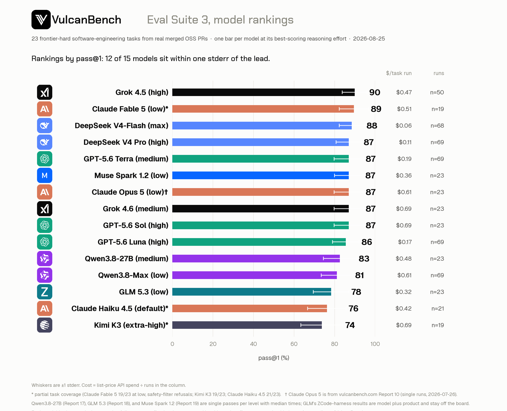
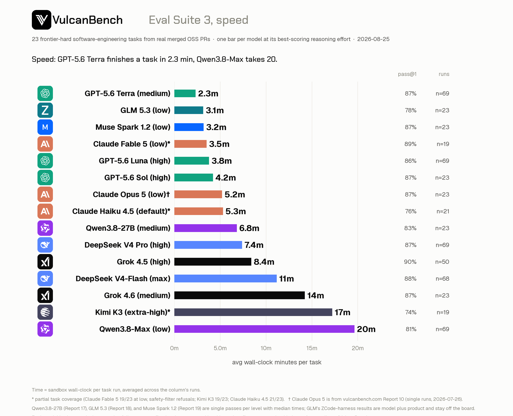
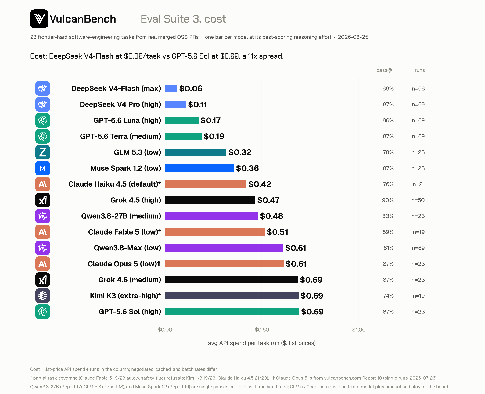
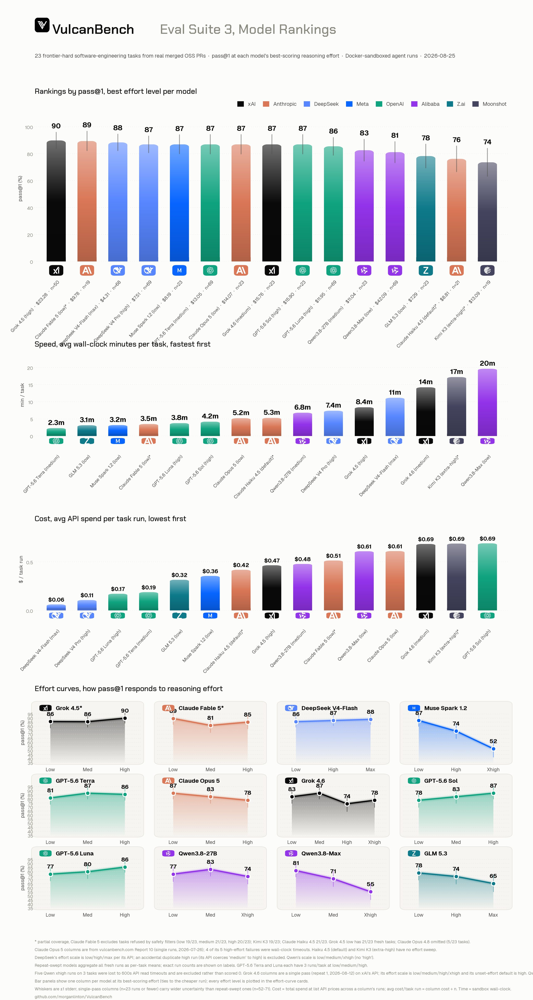
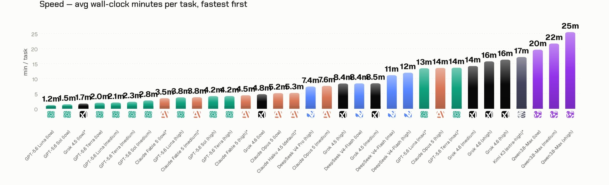
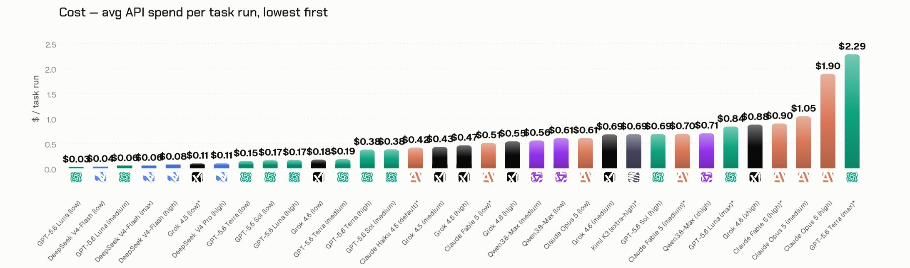
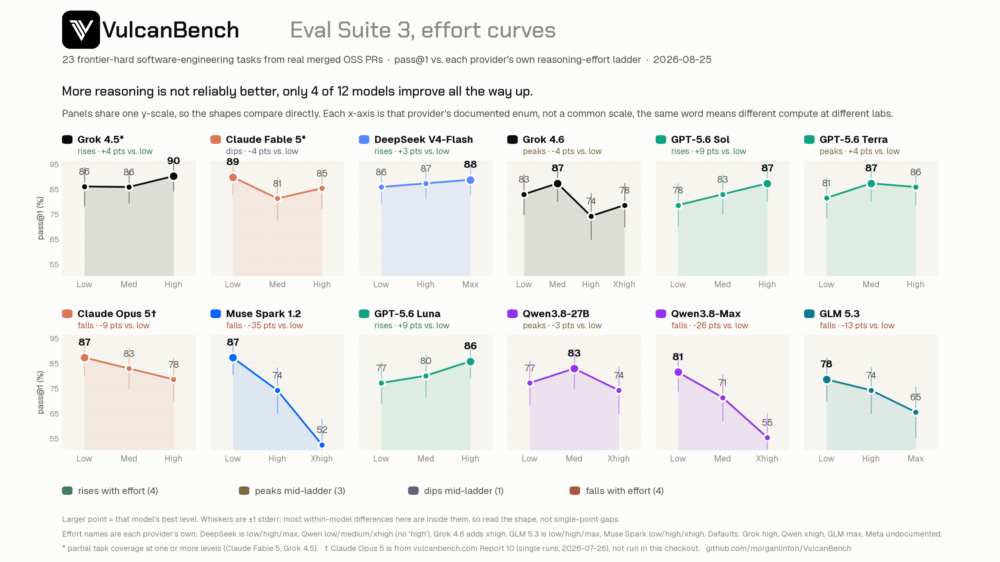

pass@1 is the mean per-task success rate across all runs in the column. Repeat-swept models aggregate three or more attempts per task; single-pass columns (n≤23) carry wider uncertainty. Cost is total spend at list API prices ÷ runs in the column; time is sandbox wall-clock per task.
| # | Model | pass@1 | ±1 se | $/task run | min/task | Runs |
|---|---|---|---|---|---|---|
| 1 | Grok 4.5 best: highLeaderlow 86* · med 86 · high 90 | 89.9% | 6.1 | $0.47 | 8.4 | 50 |
| 2 | Claude Fable 5 best: low · 19/23 tasks*low 89* · med 81* · high 85* | 89.5% | 7.2 | $0.51 | 3.5 | 19 |
| 3 | DeepSeek V4-Flash best: maxCheapestlow 86 · high 87 · max 88 | 88.4% | 6.2 | $0.06 | 11.2 | 68 |
| 4 | DeepSeek V4 Pro highhigh 87 · one level run so far | 87.0% | 6.2 | $0.11 | 7.4 | 69 |
| 5 | GPT-5.6 Terra best: mediumFastestlow 81 · med 87 · high 86 · max 86* | 87.0% | 7.2 | $0.19 | 2.3 | 69 |
| 6 | Claude Opus 5 best: low · Report 10†low 87 · med 83 · high 78 | 87.0% | 7.2 | $0.61 | 5.2 | 23 |
| 7 | Grok 4.6 best: mediumlow 83 · med 87 · high 74 · xhigh 78 | 87.0% | 7.2 | $0.69 | 14.2 | 23 |
| 8 | GPT-5.6 Sol best: highlow 78 · med 83 · high 87 | 87.0% | 7.2 | $0.69 | 4.2 | 23 |
| 9 | GPT-5.6 Luna best: highlow 77 · med 80 · high 86 · max 86* | 85.5% | 6.6 | $0.17 | 3.8 | 69 |
| 10 | Qwen3.8-27B best: mediumNewlow 77 · med 83 · xhigh 74 | 82.6% | 8.1 | $0.48 | 6.8‡ | 23 |
| 11 | Qwen3.8-Max best: lowlow 81 · med 71 · xhigh 55 | 81.2% | 7.8 | $0.61 | 19.6 | 69 |
| 12 | Claude Haiku 4.5 default · 21/23 tasks*default 76 · no effort knob exposed | 76.2% | 9.5 | $0.42 | 5.3 | 21 |
| 13 | Kimi K3 extra-high · 19/23 tasks*extra-high 74 · single tested setting | 73.7% | 10.4 | $0.69 | 17.2 | 19 |
The small print under each model is its full effort ladder (pass@1 per level, best in orange); an asterisk on a level marks partial task coverage. * Partial task coverage: Claude Fable 5 excludes tasks refused by its safety filters (low 19/23, medium 21/23, high 20/23); Kimi K3 19/23; Claude Haiku 4.5 21/23; Grok 4.5 low has 21/23 fresh tasks. † Claude Opus 5 rows come from Report 10 (single runs, 2026-07-26). ‡ Qwen3.8-27B joined 2026-08-23 from Report 17: one pass per level, times are medians, and its low column aggregates three runs (mean 76.8%, the value its ladder shows). Effort names are each provider’s own enum: DeepSeek’s top level is “max”, Qwen’s and Grok 4.6’s is “xhigh”. Claude Haiku 4.5 and Kimi K3 have a single tested setting.


The best-per-model view shows one row per model. This is everything behind those rows: all 36 model×effort columns that have run on the frozen v3 suite. When a model’s row says “best: low”, its medium and high columns are here too — low simply beat them. Click a column header to re-sort by score, cost, or speed.

pass@1 here is shown to the whole percent, as on the card; the per-model reports carry the decimals and per-task detail. Cost is total column spend at list API prices ÷ runs; single-pass columns (n≤23) carry wider uncertainty than repeat-swept ones. best marks the column that represents its model in the rankings above.
| # | Model | Effort | pass@1 | $/task run | min/task | Runs |
|---|---|---|---|---|---|---|
| 1 | Grok 4.5best | high | 90% | $0.47 | 8.4 | 50 |
| 2 | Claude Fable 5best | low* | 89% | $0.51 | 3.5 | 19 |
| 3 | DeepSeek V4-Flashbest | max | 88% | $0.06 | 11.2 | 68 |
| 4 | DeepSeek V4-Flash | high | 87% | $0.08 | 12.0 | 69 |
| 5 | DeepSeek V4 Probest | high | 87% | $0.11 | 7.4 | 69 |
| 6 | GPT-5.6 Terrabest | medium | 87% | $0.19 | 2.3 | 69 |
| 7 | Claude Opus 5best | low† | 87% | $0.61 | 5.2 | 23 |
| 8 | Grok 4.6best | medium | 87% | $0.69 | 14.2 | 23 |
| 9 | GPT-5.6 Solbest | high | 87% | $0.69 | 4.2 | 23 |
| 10 | Grok 4.5 | low* | 86% | $0.11 | 1.7 | 21 |
| 11 | GPT-5.6 Luna | max* | 86% | $0.84 | 13 | 21 |
| 12 | GPT-5.6 Terra | max* | 86% | $2.29 | 14 | 21 |
| 13 | DeepSeek V4-Flash | low | 86% | $0.04 | 8.4 | 69 |
| 14 | GPT-5.6 Lunabest | high | 86% | $0.17 | 3.8 | 69 |
| 15 | Grok 4.5 | medium | 86% | $0.43 | 8.5 | 50 |
| 16 | GPT-5.6 Terra | high | 86% | $0.38 | 4.2 | 69 |
| 17 | Claude Fable 5 | high* | 85% | $0.90 | 4.5 | 20 |
| 18 | Grok 4.6 | low | 83% | $0.18 | 4.8 | 23 |
| 19 | GPT-5.6 Sol | medium | 83% | $0.38 | 2.8 | 23 |
| 20 | Qwen3.8-27BbestNew | medium‡ | 83% | $0.48 | 6.8 | 23 |
| 21 | Claude Opus 5 | medium† | 83% | $1.05 | 7.6 | 23 |
| 22 | GPT-5.6 Terra | low | 81% | $0.15 | 2.0 | 69 |
| 23 | Qwen3.8-Maxbest | low | 81% | $0.61 | 19.6 | 69 |
| 24 | Claude Fable 5 | medium* | 81% | $0.70 | 3.8 | 21 |
| 25 | GPT-5.6 Luna | medium | 80% | $0.06 | 2.1 | 69 |
| 26 | GPT-5.6 Sol | low | 78% | $0.17 | 1.5 | 23 |
| 27 | Grok 4.6 | xhigh | 78% | $0.88 | 15.8 | 23 |
| 28 | Claude Opus 5 | high† | 78% | $1.90 | 13.6 | 23 |
| 29 | GPT-5.6 Luna | low | 77% | $0.03 | 1.2 | 69 |
| 30 | Qwen3.8-27BNew | low‡ | 77% | $0.71 | 7.1 | 69 |
| 31 | Claude Haiku 4.5best | default* | 76% | $0.42 | 5.3 | 21 |
| 32 | Grok 4.6 | high | 74% | $0.55 | 16.3 | 23 |
| 33 | Qwen3.8-27BNew | xhigh‡ | 74% | $0.69 | 17.1 | 23 |
| 34 | Kimi K3best | extra-high* | 74% | $0.69 | 17.2 | 19 |
| 35 | Qwen3.8-Max | medium | 71% | $0.56 | 21.7 | 69 |
| 36 | Qwen3.8-Max | xhigh | 55% | $0.71 | 25.5 | 64 |
* Partial task coverage: Claude Fable 5 excludes tasks refused by its safety filters (low 19/23, medium 21/23, high 20/23); Kimi K3 19/23; Claude Haiku 4.5 21/23; Grok 4.5 low has 21/23 fresh tasks. † Claude Opus 5 columns are from Report 10. ‡ Qwen3.8-27B columns are from Report 17 (2026-08-21): single pass per level, times are medians rather than means, and the low column aggregates its three runs. GPT-5.6 Terra and Luna “max” columns are partial-coverage single sweeps of a level OpenAI added after the main runs; per the board rule they cannot outrank those models’ full columns. Five Qwen3.8-Max xhigh runs lost to 600s API read timeouts are excluded rather than scored 0.


The best-per-model rows show one effort level each. This card shows every level that was tested, on one shared y-scale: more reasoning is not reliably better on this suite, and for several models it is worse.

A model joins the board only when its full reasoning-effort ladder has run on the frozen v3 suite — no single-effort cameos, because one column tells you nothing about the knob. Currently queued:
VulcanBench Eval Suite 3: 23 tasks from real merged post-cutoff PRs (Python 9, TypeScript 4, Rust 4, Go 3, JavaScript 3), graded by deterministic hidden tests in Docker with model judges disabled. Each row aggregates every fresh run of that model at that effort whose task hashes match the frozen suite; pass@1 is the mean per-task success rate and its standard error is the spread of per-task means. The cards are regenerated from the public run data with the harness’s scripts/rankings-chart pipeline; table rows are transcribed from that pipeline’s output and the numbered reports. Individual reports on the Benchmarks page carry the per-task detail, failure modes, and caveats behind each row.
{kind=link}
{kind=link}
{kind=link}
{kind=link}
{kind=link}